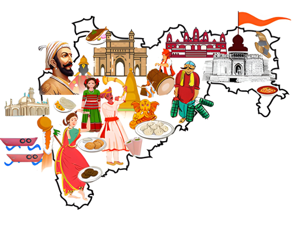

West India
Western India is a loosely defined region of India that encompasses the country's western regions. The states of Goa, Gujarat, and Maharashtra, as well as the Union territories of Dadra and Nagar Haveli and Daman and Diu.
They are included in the Ministry of Home Affairs' Western Zonal Council Administrative division, whereas the Ministry of Culture and certain historians include the state of Rajasthan. Maharashtra is included in the Geological Survey of India, but Rajasthan is not, and the Ministry of Minority Affairs includes Karnataka but not Rajasthan.
1. Maharashtra

Maharashtra is a state in the western and central peninsular region of India occupying a substantial portion of the Deccan Plateau. Maharashtra is the second-most populous state in India and the second-most populous country subdivision globally. It was formed on 1 May 1960 by splitting the bilingual Bombay State, which had existed since 1956, into majority Marathi-speaking Maharashtra and Gujarati-speaking Gujarat as a result of nationwide organization of states on the basis of language. Maharashtra is divided into 6 divisions and 36 districts, with the state capital being Mumbai, the most populous urban area in India, and Nagpur serving as the winter capital, also hosts the winter session of the state legislature. Godavari and Krishna are the two major rivers in the state. Marathi is the most widely spoken language and is the state's only official language. The forest constitutes 16.47% of the state's geographical area. Out of the total cultivable land in the state, about 60% is used for grain crops in the Deccan region, rice in coastal Konkan and other high rainfall areas.
WELCOME TO MAHARASHTRA